Presentation video
STEMbot in five minutes
The complete project video covers the motivation, system design, methods, and experimental evaluation.
Overview
Reaching the places conventional crop robots cannot see
The scalability of organic agriculture is partially limited by the labor costs associated with monitoring for pests. While drones and rovers are well-suited for agricultural monitoring from above or next to plants, many pests live on the underside of leaves or on plant stems, making them detectable only after they have caused significant damage.
STEMbot is a miniature climbing robot system designed for autonomous navigation under plant canopies. It integrates a fully geometric PIN-SLAM pipeline with a semantic OcTree, a manifold-constrained A* planner, and ray-tracing goal specification for branch-aware traversal and plant inspection.
Contributions
- A miniature compliant robot that traverses stems, transitions onto branches, and maintains contact while fully inverted.
- A semantic OcTree pipeline combining PIN-SLAM, SAM, and CLIP for geometric reconstruction and semantic odometry.
- A manifold-constrained A* planner for branch-aware navigation along plant structures.
- Hardware experiments on artificial and live plants evaluating traversal, mapping, and autonomous navigation.
Integrated system
Perception, planning, and control in one climbing platform
RGB-D vision builds a geometric and semantic representation of the plant. A receding-horizon planner searches that representation and dispatches discrete locomotion primitives to the robot.
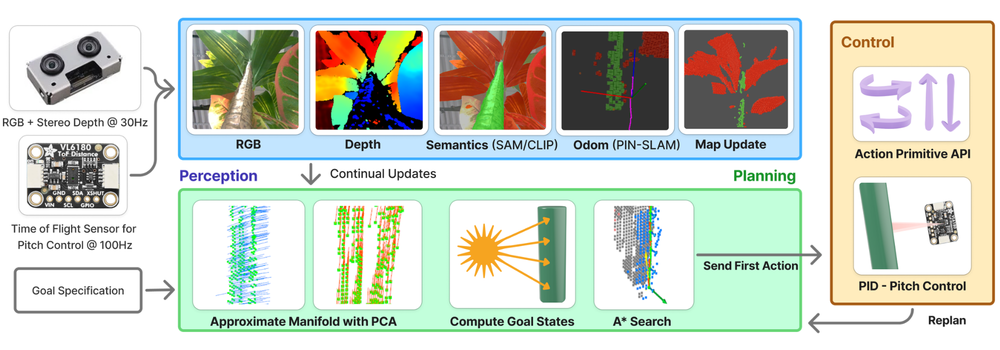
Hardware
Compliant grip without fully enclosing the stem
Two motor pairs drive concave, high-friction EcoFlex wheels. A spring-loaded four-bar linkage maintains contact across varying stem diameters while allowing branches and protrusions to pass through the robot’s open geometry.
Coordinated wheel motion provides three primitives: longitudinal traversal, circumferential yaw, and pitch adjustment. An Intel RealSense D405 camera—incorporating the D401 depth module—supports stereo depth sensing, while a VL6180X time-of-flight sensor feeds a closed-loop pitch controller.
- Four 700:1 sub-micro planetary gearmotors
- Compliant EcoFlex 00-45 wheel surfaces
- Vertical, yaw, and pitch motion primitives
- 90 Hz time-of-flight feedback control
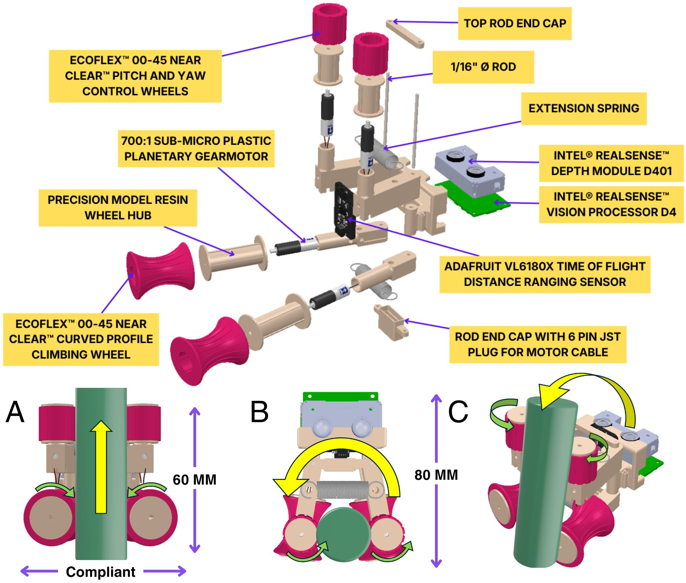
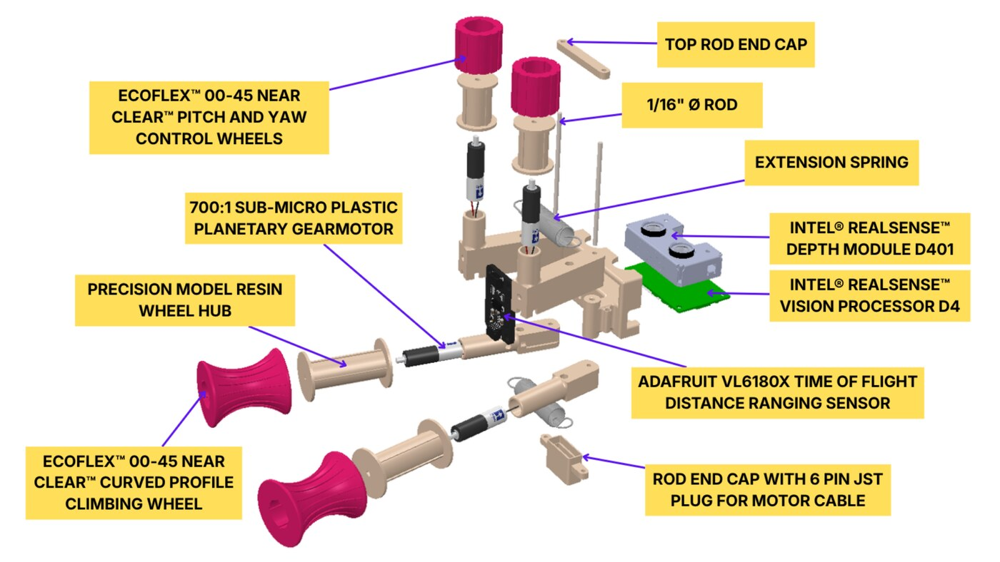
Assembly timelapse condensed to one minute.
Perception
Geometry-first localization with semantic structure
PIN-SLAM registers depth observations without relying on repetitive plant appearance. SAM proposes image masks, CLIP classifies them, and high-confidence depth observations are fused into a probabilistic semantic OcTree.
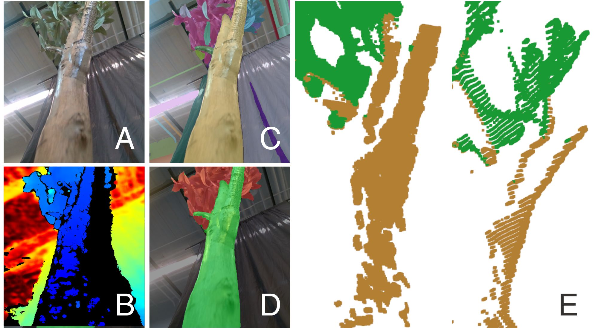
Semantic manifold estimation
Traversable stem voxels are indexed for efficient spatial queries. Principal component analysis estimates the local surface normal and longitudinal branch heading used by the planner.
Perception demonstration
Traversable plant structure is separated from surrounding geometry. Our bayesian mapping is robust to false negatives and occasional semantic misclassifications.
Motion planning
A* search constrained to the plant manifold
Each state stores a position, surface normal, and proximal or distal branch heading. Candidate actions are projected back to nearby traversable voxels, checked for collision and orientation consistency, and pruned when a branch transition violates docking geometry.
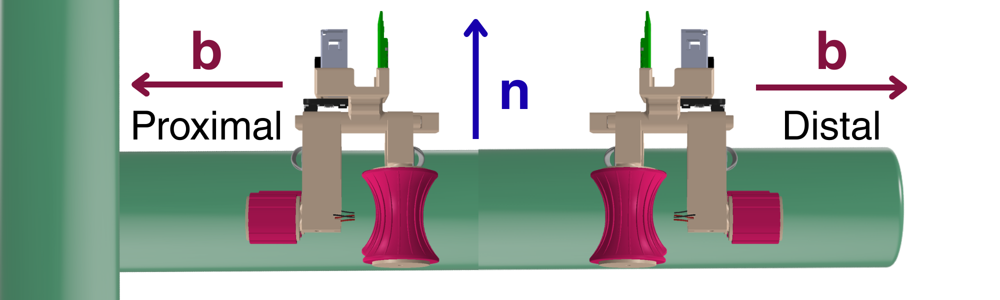
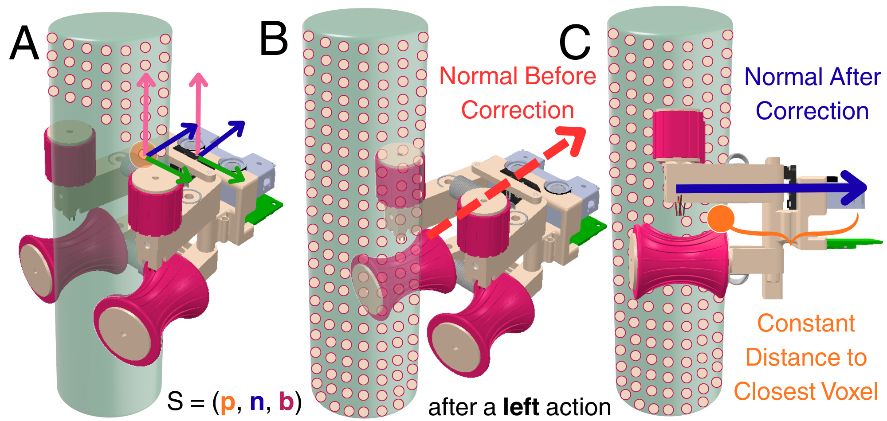
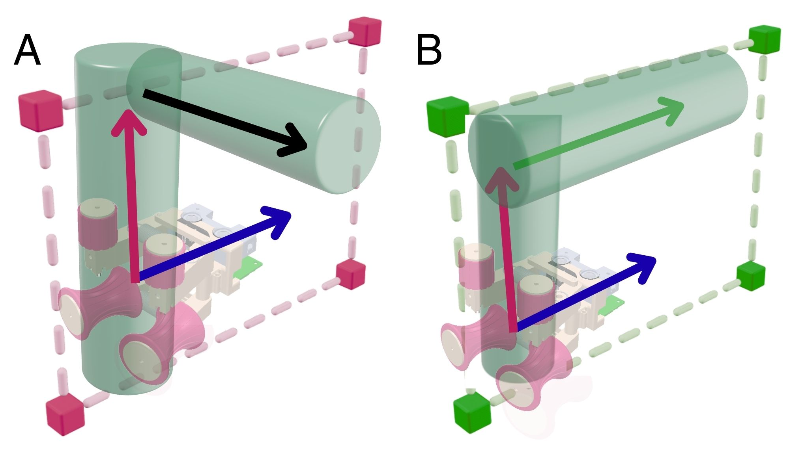
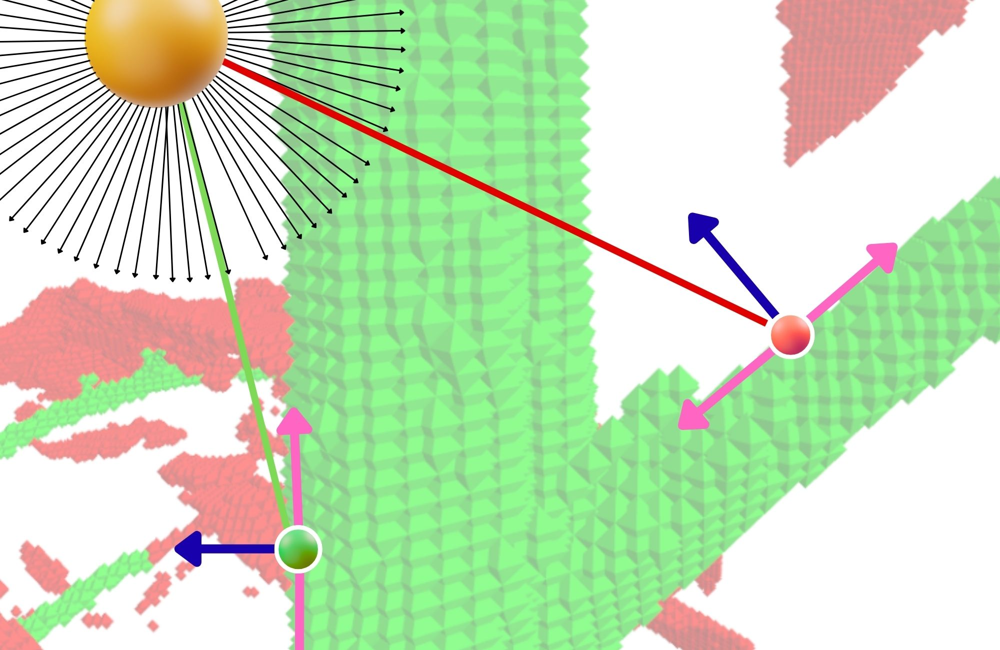
Two goal modalities
State goals move the robot to a specified manifold coordinate. Visibility goals instead identify robot states from which a target point lies inside the camera frustum without stem or leaf occlusion.
Only the first action of each planned path is executed. The system then replans from updated odometry, allowing it to account for wheel slip, stem irregularities, and contact not represented by the model.
Traversal capability
Mechanical limits across diameter, curvature, and junction angle
Bench tests isolate individual geometric variables using common cylindrical objects and 3D-printed PLA fixtures.
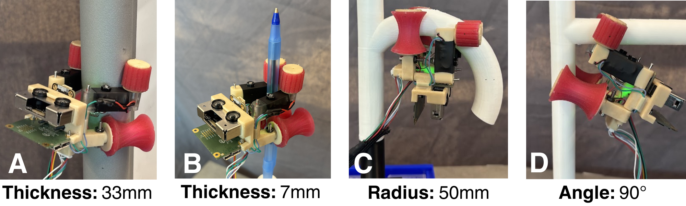
Stem diameter
Nine supplied trials spanning 8–25 mm.
Branch transitions and curvature
The 120° clip documents a failed transition outside the demonstrated 90° capability.
Autonomous experiments
Mapping and navigation across artificial and live plants
The evaluation uses state goals for Dracaena and Ficus and visibility-constrained goals for Monstera and Olea. Robot and map videos below are complete-run timelapses.
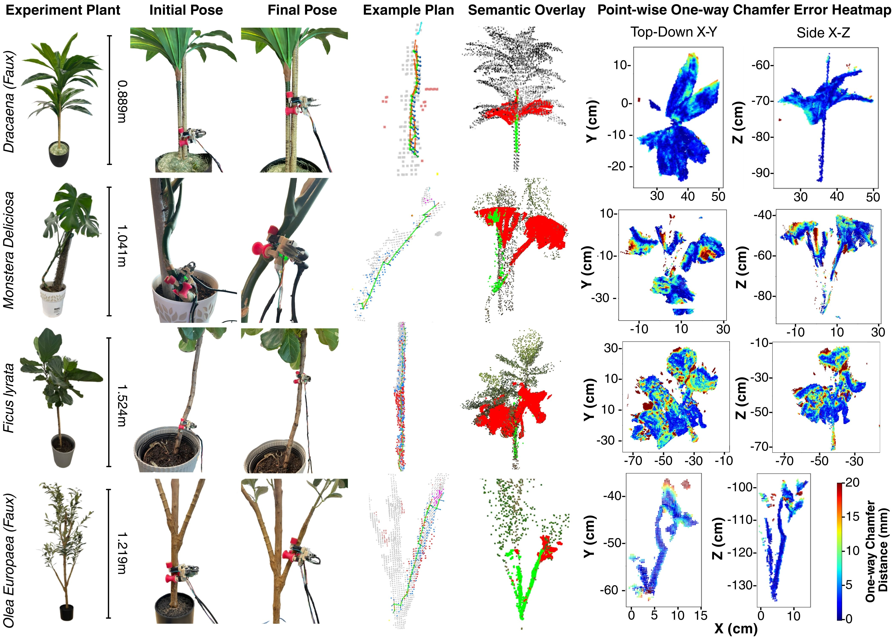
01
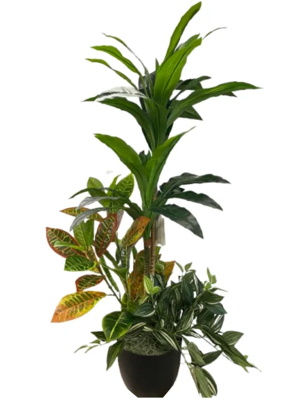
Artificial specimen · State goal
Dracaena
A static artificial plant used to evaluate autonomous navigation and globally consistent semantic reconstruction.
Robot trial
Map and plan
Semantic reconstruction
Chamfer error
02
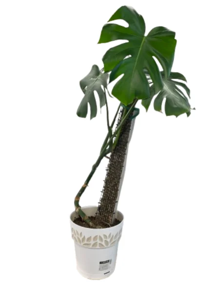
Live specimen · Visibility goal
Monstera deliciosa
A visibility-constrained trial on a live plant with low color contrast and complex leaf geometry.
Robot trial
Map and plan
Semantic reconstruction
Chamfer error
03
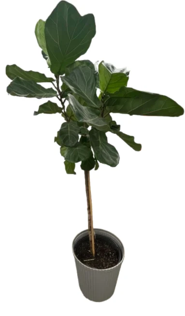
Live specimen · State goal
Ficus lyrata
A state-goal navigation trial on a tall live specimen used to evaluate mapping consistency over an extended trajectory.
Robot trial
Map and plan
Semantic reconstruction
Chamfer error
04
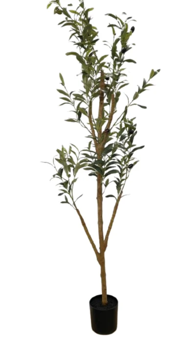
Artificial specimen · Visibility goal
Olea europaea
A visibility-goal trial requiring the robot to reorient before transitioning between artificial branches.
Robot trial
Map and plan
Semantic reconstruction
Chamfer error
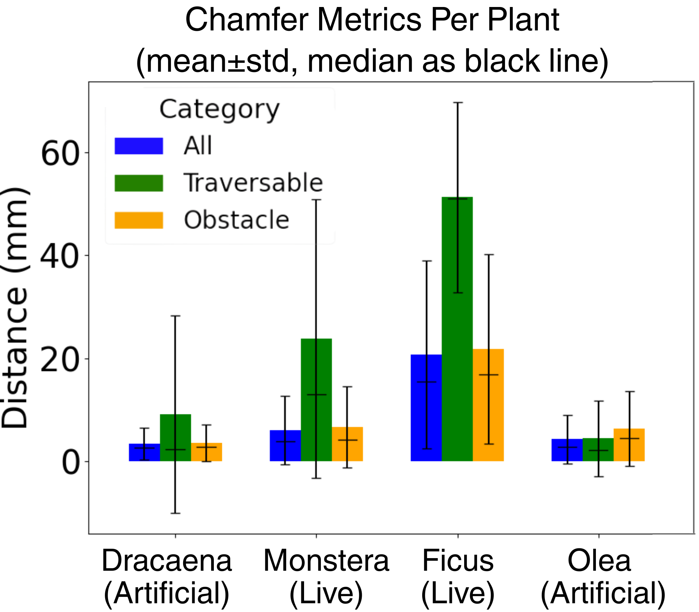
Mapping accuracy
Globally consistent geometry for closed-loop navigation
3.85 mm
mean one-way Chamfer distance across artificial specimens
13.36 mm
mean one-way Chamfer distance across live specimens
Higher live-plant error is attributed to organic non-rigidity, biological growth between baseline and trial scans, and a semantic misclassification on the Monstera.
Citation
BibTeX
This entry will be updated when the final proceedings metadata becomes available.
@inproceedings{charlick2026stembot,
author = {Charlick, Zachary and Roy Choudhury, Nilay and Ma, Haoyu and Huang, Xiaonan and Berenson, Dmitry},
title = {{STEMbot}: A Compliant Robot for Under-Canopy Plant Navigation},
booktitle = {Proceedings of the IEEE/RSJ International Conference on Intelligent Robots and Systems},
year = {2026}
}
Acknowledgments and funding:
TODO — awaiting author-approved funding language.